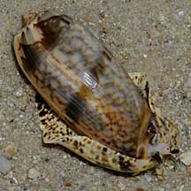
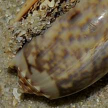
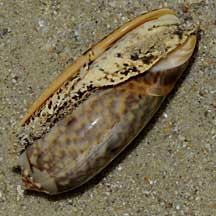
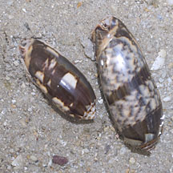
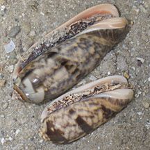
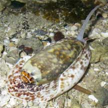

|
|
| shelled snails text index | photo index |
| Phylum Mollusca > Class Gastropoda > Family Olividae |
| Orange-mouth
olive snail Oliva miniacea* Family Olividae updated Sep 2020 Where seen? This large bullet-shaped snail is sometimes seen on some of our shores. A burrowing snail, it is more often seen above the ground at night or with the incoming tide. To find it, look out for the typical trail it leaves on the sand surface as it burrows beneath. It was previously known as Olivia sericea. Oliva irisans may look similar. Features: 4-5cm. Shell thick heavy glossy, cylindrical bullet-shaped, shell spire flattened with short pointed tip. Shell pattern of closely set zig-zag lines with dark spirals across the whole pattern. Shell opening may be orange on the inner portion. Body large, beige with brown spots all over. A long siphon sticks out of the notch in the shell. It does not have an operculum. |
|
 Cyrene Reef, Jun 09 |
 Spire flattened with short pointed tip. |
 Shell opening often orange or orangey. |
|
 Cyrene Reef, Aug 11 |
 Cyrene Reef, Aug 11 |
 |
| Status and threats: This olive snail is listed as 'Vulnerable' in the Red List of threatened animals of Singapore. |
*Species are difficult to positively identify without close examination.
On this website, they are grouped by external features for convenience of display.
| Orange-mouth olive snails on Singapore shores |
On wildsingapore
flickr
|
| Other sightings on Singapore shores |
 Cyrene Reef, Oct 08 Photo shared by Toh Chay Hoon on her flickr. |
Thanks to Yan Le Su for identifying this snail.
| Acknowledgements With grateful thanks to JK of SiputKuning.com for identifying this snail on the wild shores blog. Links
References
|